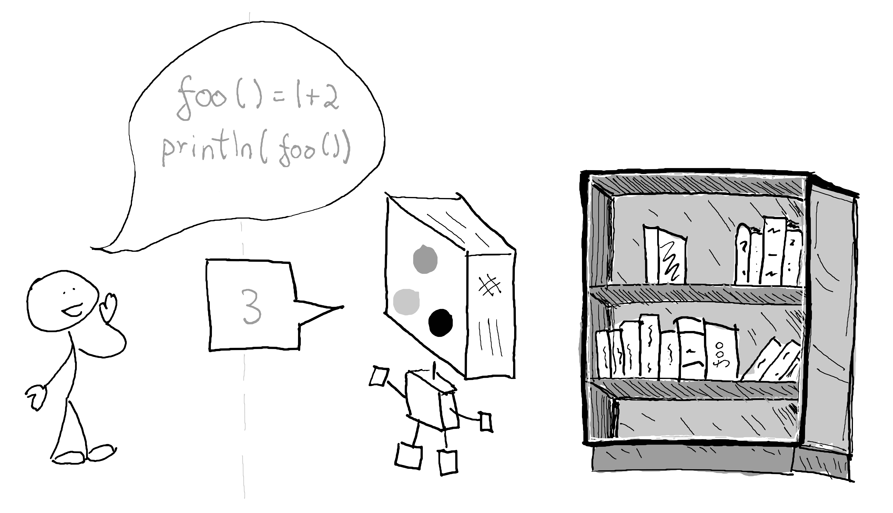

Understanding variables and mutability in Julia
julia, analogy, pass by sharing
I would like to present a mental model for understanding the basics of variable assignment and mutability in Julia using an analogy involving books and bookshelves, from a complete beginner’s perspective.
Imagine you are at a library full of books on bookshelves, but they are all over the place and you can’t find what you want. Also, you can’t interact directly with the books or bookshelves.
Instead, you have to ask a very smart and helpful librarian, who knows where all the books are and can help you find what you need, to retrieve or modify the books for you. But in order for them to help you, you are form a pact with the librarian to speak in a very specific language with certain rules and decrees.

In this mental model, you can think of a program’s memory as a number of bookshelves in a library. The librarian represents the Julia program (i.e. command line interface, the language semantics, the LLVM compiler, etc), and the text in the .jl files is how you communicate using the Julia language.
To interact with the bookshelf (i.e., the program’s memory), the Julia language, as part of its vocabulary, provides you with functions and variables among other things.
Functions in Julia are like a set of instructions that you give to the librarian, telling them what actions you’d like to take with the books.
julia> function foo()
1 + 2
end
julia> foo()
3Here we have a simple function foo() that adds the numbers 1 and 2 together and returns the result.
And variables in Julia are the labels the librarian gives you that are associated with specific books on the bookshelf, allowing you to refer to them later on.
julia> x = 1;
julia> y = 2;
julia> x + y
3Here we assign the value 1 (also sometimes referred to as bind the value
) to the label x, assign (or bind) the value 2 to label y and use the labels x and y to retrieve these values and add them together to get the result.
By thinking of code in this way, you can better understand how your program interacts with memory and how the different elements of your code work together.
Assignment
In Julia, the = operator can be used to create a new label.
Let’s look at a code example:
julia> x = [0.0, 0.0, 0.0, 0.0];
julia> x
3-element Vector{Float64}:
0.0
0.0
0.0
0.0This creates a new label x that is associated to an object in memory. You can retrieve a value that is bound to a label using the label itself.
We can use existing labels in assignments in the Right Hand Side (RHS):
julia> y = x;
julia> y
3-element Vector{Float64}:
0.0
0.0
0.0
0.0If you see a = symbol and to the left of the = there is a simple name of a variable, that is an assignment operation. When you ask to perform this action, x = [0.0, 0.0, 0.0, 0.0], the [0.0, 0.0, 0.0, 0.0] object is created, and label called x that is bound to said created object.
When you assign y = x, you are asking to create new label called y that is also bound to the same object as the x label.
So in our analogy, the x and y variables are two labels that you and the librarian agree point to the same book
on the bookshelf
(i.e. the same object in memory).
In Julia, you can check the location by using the pointer() function:
pointer function only works for mutable objectsjulia> pointer(x)
Ptr{Float64} @0x0000000161c60d60
julia> pointer(y)
Ptr{Float64} @0x0000000161c60d60When you call this pointer function, you are passing in a label called x and Julia returns the memory address of the object that was bound to that label. You can see that x and y point to an object that has the same memory address.
Because x and y are bound to the same object, changes made to the object through x will also be visible through y.
julia> x
3-element Vector{Float64}:
0.0
0.0
0.0
0.0
julia> y
3-element Vector{Float64}:
0.0
0.0
0.0
0.0
julia> x[1] = 2.0;
julia> x
3-element Vector{Float64}:
2.0
0.0
0.0
0.0
julia> y
3-element Vector{Float64}:
2.0
0.0
0.0
0.0This is like if the librarian changed a page in the book located at label x. If you came back later and asked for the book located at label y, you’d get the same book as you would have with label y, which would contain the same changes.
When you modify x[1] = 2.0, you are telling Julia to make a change to the object bound to the x label, which in this case changes the first element of the vector to 2.0. And since y points to the same memory location as x, when you inspect the y variable, you will see that it also reflects the same changes made to the underlying memory location. Because both x and y are just different labels pointing to the same memory location, any changes made through one of the labels will be visible when you look at the contents through the other label.
But what if you did want to create a entirely new object instead? You can do that using the deepcopy() function:
julia> y = deepcopy(x)
4-element Vector{Float64}:
2.0
0.0
0.0
0.0
julia> pointer(x)
Ptr{Float64} @0x0000000161c60d60
julia> pointer(y)
Ptr{Float64} @0x0000000107e4c880In the analogy of the bookshelf, using deepcopy() would be like asking the librarian to make a photocopy of a book and place it at a new location on the shelf.
The new object created is completely independent from the old, with its own unique address. Any changes made to the original object will not affect the copy and vice versa.
Assignments always create labels, and may replace the value in an existing label with a new one.
Mutability
We saw in the previous section that the = operator can be used to assign values to a label. But in Julia, it can also be used to mutate existing values that can be accessed through a label. The difference is what exists on the Left Hand Side (LHS) of the = operator.
For example, this is an assignment:
julia> x = [0.0, 0.0, 0.0, 0.0];i.e. if the LHS of the equals operator is a variable without any [] or . or @ symbols, it means an assignment has happened.
However, if there’s a [] in the LHS, then it is not an assignment anymore, but a mutation instead.
julia> x[1] = 2.0;
julia> x
3-element Vector{Float64}:
2.0
0.0
0.0
0.0Here, the equals operation changes the value at the specified index of the LHS, and in this case that is the first index of the object bound by the x label.
There’s another case where the equals operation does a mutation, and that is when you use the object notation in the LHS, i.e. object.field.
In Julia, you can create struct objects that have fields, and you can get the value of a field by using the object.field:
julia> mutable struct Book
title::String
price::Float64
end
julia> book = Book("The Hitchhiker's Guide to the Galaxy", 9.99);
julia> book.price
9.99You can also set the value of the field by using the object.field = value notation. In this case, the field is reassigned or rebound to a new object, but the object is said to be mutated.
julia> pointer_from_objref(book)
Ptr{Nothing} @0x000000012b440f10
julia> book.price = 4.99;
julia> book
Book("The Hitchhiker's Guide to the Galaxy", 4.99)
julia> pointer_from_objref(book)
Ptr{Nothing} @0x000000012b440f10Notice how the pointer value of the book object did not change.
julia> pointer(book.title)
Ptr{UInt8} @0x000000012b30ad98
julia> book.title = "The Hitchhiker's Guide to the Galaxy - Douglas Adams";
julia> book
Book("The Hitchhiker's Guide to the Galaxy - Douglas Adams", 9.99)
julia> pointer_from_objref(book)
Ptr{Nothing} @0x000000012b440f10
julia> pointer(book.title)
Ptr{UInt8} @0x000000012b27d800Mutability is an important concept in Julia because it determines whether or not an object can be modified. In general, mutable objects can be modified, and other objects cannot be modified.
In the analogy of the bookshelf, mutability would be like the ability to modify the contents of a book already on the bookshelf. It’s like erasing and re-writing some of the information on a page, without changing the location of the book on the shelf.
If a book is mutable, you can add or remove pages or modify existing pages, while if a book is not mutable, you cannot modify its contents and must create a new book with the desired changes.
Remember, mutations never create new labels in the current scope. They only modify values of existing variables.
There are a number of types that represent immutable objects. For example, Ints and Float64s are immutable.
Interestingly, you can also have a struct that is immutable that contains an instance of a mutable type. You can create a immutable struct by dropping the mutable keyword from the struct definition.
julia> struct ImmutableBook
title::String
price::Float64
meta::Dict{String, String}
end
julia> book = ImmutableBook("The Hitchhiker's Guide to the Galaxy", 9.99, Dict());
julia> book.price = 4.99;
ERROR: setfield!: immutable struct of type ImmutableBook cannot be changed
Stacktrace:
[1] setproperty!(x::ImmutableBook, f::Symbol, v::Float64)
@ Base ./Base.jl:39
[2] top-level scope
@ REPL[3]:1This is like if a book which was sealed or laminated had a reference in one of its pages to another notebook, diary, journal or binder. The first book which is immutable cannot be changed to point to a new second book, and will always have the same reference to the second book. The second book’s contents on the other hand can be modified.
In this code, we define a Book struct that has a title and price as before, and an additional meta dictionary. All three fields, title, price and meta point to their respective objects, and once assigned they cannot be reassigned to a new object. In Julia, for immutable structs, if you want to update the data that corresponds to a immutable object, you’ll essentially have to create a new instance of the struct.
julia> book = Book("The Hitchhiker's Guide to the Galaxy", 9.99, Dict());
julia> book = Book(book.title, 4.99, book.meta);
julia> book
Book("The Hitchhiker's Guide to the Galaxy", 4.99, Dict{String, String}())The meta dictionary, however, happens to be a mutable object. And that can be modified even though the Book instance itself is immutable.
julia> book.meta["id"] = "42";
julia> book
Book("The Hitchhiker's Guide to the Galaxy", 4.99, Dict("id" => "42"))To use our analogy, the meta field is like a page inside the book that contains the address of another book on the bookshelf. We cannot change the address on the page, but we can still modify the contents of the book at that address.
Special cases
As a sidebar, I want to touch on some special syntax that you will come across when using Julia.
Tuple unpacking
Julia supports syntax that is called unpacking
that can be used with Tuples:
julia> obj = (1, 2)
(1, 2)
julia> obj[1]
1
julia> obj[2]
2
julia> (a, b) = obj
(1, 2)
julia> a
1
julia> b
2
julia> (a, b, remaining...) = [1, 2, 3, 4, 5, 6, 7, 8, 9, 10]
10-element Vector{Int64}:
1
2
3
4
5
6
7
8
9
10
julia> a
1
julia> b
2
julia> remaining
8-element Vector{Int64}:
3
4
5
6
7
8
9
10Named Tuple unpacking
Julia also supports NamedTuple and unpacking, however you have to use a semicolon in the LHS in the unpacking syntax:
julia> obj = (a = 3, b = 4)
(a = 3, b = 4)
julia> obj.a
3
julia> obj.b
4
julia> (; a, b) = (a = 3, b = 4)
(a = 1, b = 2)
julia> a
3
julia> b
4Even though the above works fine, I like to be explicit and use ; in the construction of named tuples, like so:
julia> (; a, b) = (;a = 3, b = 4)
(a = 3, b = 4)Shorthand assignment
Sometimes you may see a character before the =, like += or -=.
a += 1; # a = a + 1
b -= 2; # b = b - 1These are called updating operations: https://docs.julialang.org/en/v1/manual/mathematical-operations/#Updating-operators
Updating operations are just a short hand for the longer assignment form.
Broadcasting
In Julia there’s a special syntax that you can use (.) in front of normal operators (e.g. .=), which, instead of assignment, does a mutation operation. When you see .=, it is broadcasting
the = operation on all elements of the LHS.
julia> x = [0.0, 0.0, 0.0, 0.0];
julia> pointer(x)
Ptr{Float64} @0x000000012d1bd000
julia> x .= 5.0;
julia> pointer(x)
Ptr{Float64} @0x000000012d1bd000
julia> x
4-element Vector{Float64}:
5.0
5.0
5.0
5.0In Julia, the following:
x .= 5.0is equivalent to
for i in eachindex(x)
x[i] = 5.0
endThis .= is called broadcasting and you can read more about it in the Julia documentation.
Julia also supports broadcasting over a subset of elements in an array:
julia> x[2:3] .= 1.0;
julia> x
4-element Vector{Float64}:
5.0
1.0
1.0
5.0
julia> x[begin:2] .= 2.0;
julia> x[3:end] .= 4.0;
julia> x
4-element Vector{Float64}:
2.0
2.0
4.0
4.0Broadcasting is always a mutation operation and will never create a new label.
Chained = operations
Julia also supports chained = operations which may do an assignment or mutation depending on what is on the LHS of that operation:
julia> x = [0.0, 0.0, 0.0, 0.0];
julia> c = x[1] = 2.0;
2.0
julia> x
4-element Vector{Float64}:
2.0
0.0
0.0
0.0
julia> c
2.0This is because in Julia everything is an expression, even the = operation. This code:
c = x[1] = 2.0;is equivalent to this:
c = (x[1] = 2.0);which effectively does this:
tmp = x[1] = 2.0
c = tmp;Strings
Strings cannot be modified using the array access.
julia> title = "The Hitchhiker's Guide to the Galaxy"
"The Hitchhiker's Guide to the Galaxy"
julia> typeof(title)
String
julia> title[1] = 't'
ERROR: MethodError: no method matching setindex!(::String, ::Char, ::Int64)
Stacktrace:
[1] top-level scope
@ REPL[138]:1You have to create a new String that contains the content you want:
julia> title_author = title * " - Douglas Adams" # you can concat strings together in Julia using `*`
"The Hitchhiker's Guide to the Galaxy - Douglas Adams"
julia> pointer(title)
Ptr{UInt8} @0x0000000160f687f8
julia> pointer(title_author)
Ptr{UInt8} @0x0000000107ea82a0Alternatively, you can use string formatting:
julia> title_author = "$title - Douglas Adams"
"The Hitchhiker's Guide to the Galaxy - Douglas Adams"Pass by sharing
In Julia, arguments to functions are always passed by sharing
. This means that when a function is called with an argument, the function receives a reference to the object that the argument refers to, rather than a copy of the object. The function can modify the object if it is mutable, but the modifications will also be visible to the caller.
julia> function add_one(V)
for i in eachindex(V)
V[i] += 1
end
end
julia> arr = [1, 2, 3];
julia> add_one(arr);
julia> arr
3-element Vector{Int64}:
2
3
4In the analogy, passing an argument to a function is like reference’s a book’s location and handing that address over to the function. The function can read the content of the book using this location address and make changes to it, but it cannot change the location address itself that was given to it. If the book is mutable, any changes made by the function will also be visible to anyone else holding the same address.
The function add_one is like someone taking a book from the shelf, incrementing every number in it by one, and putting it back in the same location. Any object that is holding a reference to the address of the book will be able to see the updated content.
A function cannot modify the address
that the label points to in the call site.
julia> arr = [1, 2, 3];
julia> function incorrect_replace_with_zeros(arr)
arr = [0.0 for _ in eachindex(arr)]
end
julia> incorrect_replace_with_zeros(arr);
julia> arr
3-element Vector{Int64}:
1
2
3This may be more obvious if we add calls to the pointer() function:
julia> arr = [1, 2, 3];
julia> pointer(arr)
Ptr{Int64} @0x000000010d156070
julia> function incorrect_replace_with_zeros(arr)
println("Before assignment: ", pointer(arr))
arr = [0.0 for _ in eachindex(arr)]
println("After assignment: ", pointer(arr))
end
julia> incorrect_replace_with_zeros(arr);
Before assignment: Ptr{Int64} @0x000000010d156070
After assignment: Ptr{Float64} @0x000000012de42b60
julia> arr
3-element Vector{Int64}:
1
2
3
julia> pointer(arr)
Ptr{Int64} @0x000000010d156070The function incorrect_replace_with_zeros is like someone taking a book from the shelf, creating a new book, and putting the new book in a different location on the shelf and leaving the old book in the same location. Therefore, the caller still has the original book, and the original book was unaffected by this function. The function also doesn’t return any reference to the new book, and the new book is effectively lost forever.
You can only modify the values of the object shared
from the call site using the [], .= or .fieldname syntax.
If you wanted to write a version that correctly replaces the values of the arr with zeros, you can do the following:
julia> arr
3-element Vector{Int64}:
1
2
3
julia> pointer(arr)
Ptr{Int64} @0x000000010d156070
julia> function replace_with_zeros!(arr)
println("Before assignment: ", pointer(arr))
arr .= [0.0 for _ in eachindex(arr)]
println("After assignment: ", pointer(arr))
end
replace_with_zeros! (generic function with 1 method)
julia> replace_with_zeros!(arr);
Before assignment: Ptr{Int64} @0x000000010d156070
After assignment: Ptr{Int64} @0x000000010d156070
julia> arr
3-element Vector{Int64}:
0
0
0
julia> pointer(arr)
Ptr{Int64} @0x000000010d156070The function replace_with_zeros! is like someone taking a book from the shelf, erasing its content, and putting it back in the same location. Since the location address is not changed, anyone else holding the same address will see the updated content.
By convention, the ! at the end of the function name is a convention in Julia to indicate that the function modifies its argument in place.
Default keyword arguments
Both Python and Julia support keyword arguments with default values for functions, but their behavior is subtly different.
In [1]: def append_to_arr(*, arr=[]):
...: arr.append(1)
...: return arr
...:
In [2]: append_to_arr()
Out[2]: [1]
In [3]: append_to_arr()
Out[3]: [1, 1]
In [4]: append_to_arr()
Out[4]: [1, 1, 1]
In [5]: append_to_arr()
Out[5]: [1, 1, 1, 1]
In [6]: append_to_arr()
Out[6]: [1, 1, 1, 1, 1]julia> function append_to_arr(; arr = [])
push!(arr, 1)
return arr
end
append_to_arr (generic function with 1 method)
julia> append_to_arr()
1-element Vector{Any}:
1
julia> append_to_arr()
1-element Vector{Any}:
1
julia> append_to_arr()
1-element Vector{Any}:
1
julia> append_to_arr()
1-element Vector{Any}:
1
julia> append_to_arr()
1-element Vector{Any}:
1In Python, a function like this:
def append_to_arr(*, arr=[]):
arr.append(1)
return arris equivalent to the following:
GLOBAL_ARR = []
def append_to_arr(*, arr=None):
if arr is None
arr = GLOBAL_ARR
arr.append(1)
return arrSo every time you call append_to_arr, you are modifying the global array.
But in Julia, a function like this:
function append_to_arr(; arr = [])
push!(arr, 1)
return arr
endis essentially equivalent to:
function append_to_arr(; arr = nothing)
if isnothing(arr)
arr = []
end
push!(arr, 1)
return arr
endSo every time you call the function, the default value is recreated.
Other than that, the pass by sharing semantics are the same in Python and Julia. If you passed an keyword argument into these functions in Python and Julia, you’ll get the same behavior.
In Python:
In [1]: def append_to_arr(*, arr=[]):
arr.append(1)
return arr
In [2]: arr = []
In [3]: append_to_arr(arr = arr)
Out[3]: [1]
In [4]: append_to_arr(arr = arr)
Out[4]: [1, 1]
In [5]: append_to_arr(arr = arr)
Out[5]: [1, 1, 1]
In [6]: arr
Out[6]: [1, 1, 1]In Julia:
julia> function append_to_arr(; arr = [])
push!(arr, 1)
return arr
end
append_to_arr (generic function with 1 method)
julia> arr = []
Any[]
julia> append_to_arr(; arr = arr)
1-element Vector{Any}:
1
julia> append_to_arr(; arr)
2-element Vector{Any}:
1
1
julia> append_to_arr(; arr)
3-element Vector{Any}:
1
1
1
julia> arr
3-element Vector{Any}:
1
1
1You may have noticed that we skipped the = arr in the latter two function calls.
For keyword arguments written after a ;, if the variable name is the same as the keyword argument name, Julia lets you use a shorthand syntax that lets you skip writing the same variable name twice.
The following are identical:
julia> append_to_arr(; arr = arr);
julia> append_to_arr(; arr);If the variable name is different from the keyword argument name, you’ll have to use the explicit syntax.
const variables
In Julia, you can use the const keyword before declaring a variable for the first time in the global scope.
julia> const CONFIG = Dict()In our analogy, this is like if the librarian handed back a label that would always be bound to the same object for the life of the program.
For the duration of the program, the CONFIG label will point to location 0x6009.
Trying to redefine a const variable to bind to a different value is an error:
julia> const CONFIG = []
ERROR: invalid redefinition of constant CONFIG
Stacktrace:
[1] top-level scope
@ REPL[172]:1It is important to remember that even though the variable is const, the object is still mutable.
julia> CONFIG["debug"] = false;
julia> CONFIG
Dict{Any, Any} with 1 entry:
"debug" => falseConclusions
Thinking of programming memory as a bookshelf in a library can help you understand how your program interacts with memory and how mutation works in languages like Julia with shared references.
The Julia official documentation is great at formally explaining these concepts and I highly recommend reading the manual to learn more.
References
Reuse
Citation
@online{krishnamurthy2023,
author = {Krishnamurthy, Dheepak},
title = {Understanding Variables and Mutability in {Julia}},
pages = {undefined},
date = {2023-02-26},
url = {https://kdheepak.com/blog/understanding-variables-and-mutability-in-julia},
langid = {en}
}